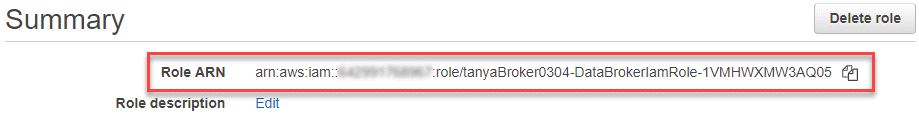

请求文档变更
请求文档变更 在 GitHub 上编辑
在 GitHub 上编辑 提供者指南
提供者指南准备源和目标
验证源和目标是否满足以下要求。
网络
-
源和目标必须与数据代理组建立网络连接。
例如，如果数据中心中有 NFS 服务器，而 AWS 中有数据代理，则需要从网络到 VPC 的网络连接（ VPN 或 Direct Connect ）。
-
NetApp 建议配置源，目标和数据代理以使用网络时间协议（ NTP ）服务。三个组件之间的时间差不应超过 5 分钟。
目标目录
创建同步关系时，您可以使用 Cloud Sync 选择现有目标目录，然后选择在该目录中创建一个新文件夹。因此，请确保您的首选目标目录已存在。
读取目录的权限
为了显示源或目标中的每个目录或文件夹， Cloud Sync 需要对目录或文件夹具有读取权限。
- NFS
-
必须使用文件和目录上的 uid/GID 在源 / 目标上定义权限。
- 对象存储
-
-
对于 AWS 和 Google Cloud ，数据代理必须具有列表对象权限（如果您按照数据代理安装步骤进行操作，则默认情况下会提供这些权限）。
-
对于 Azure ， StorageGRID 和 IBM ，您在设置同步关系时输入的凭据必须具有列表对象权限。
-
- SMB
-
设置同步关系时输入的 SMB 凭据必须具有列表文件夹权限。

|
默认情况下，数据代理会忽略以下目录： .snapshot ， ~snapshot ， .copy-ofovert |
Amazon S3 存储分段要求
确保您的 Amazon S3 存储分段满足以下要求。
Amazon S3 支持的数据代理位置
包含 S3 存储的同步关系需要在 AWS 或您的内部部署数据代理。在这两种情况下、 Cloud Sync 都会提示您在安装期间将数据代理与 AWS 帐户关联。
支持的 AWS 区域
除中国地区外，所有地区均受支持。
在其他 AWS 帐户中 S3 数据段所需的权限
在设置同步关系时，您可以指定一个 S3 存储分段，该存储分段驻留在与数据代理不关联的 AWS 帐户中。
"此 JSON 文件中包含的权限" 必须应用于该 S3 存储分段，以便数据代理可以访问它。这些权限使数据代理可以将数据复制到存储桶中或从中复制数据、并列出存储桶中的对象。
请注意以下有关 JSON 文件中包含的权限的信息：
-
<BucketName> 是位于 AWS 帐户中且与数据代理无关的存储分段名称。
-
应将 <RoleARN> 替换为以下项之一：
-
如果在 Linux 主机上手动安装了数据代理，则 RoleARN 应是部署数据代理时为其提供 AWS 凭据的 AWS 用户的 ARN 。
-
如果使用 CloudFormation 模板在 AWS 中部署了数据代理，则 RoleARN 应是此模板创建的 IAM 角色的 ARN 。
您可以通过转至 EC2 控制台、选择数据代理实例并从“描述”选项卡中单击 IAM 角色来查找角色 ARN 。然后，应在 IAM 控制台中查看包含角色 ARN 的“摘要”页面。

-
Azure Blob 存储要求
确保 Azure Blob 存储满足以下要求。
Azure Blob 支持的数据代理位置
如果同步关系包括 Azure Blob 存储，则数据代理可以驻留在任何位置。
支持的 Azure 区域
除中国、美国政府和美国国防部地区外，所有地区均受支持。
包含 Azure Blob 和 NFS/SMB 的关系的连接字符串
在 Azure Blob 容器和 NFS 或 SMB 服务器之间创建同步关系时，需要使用存储帐户连接字符串提供 Cloud Sync ：

如果要在两个 Azure Blob 容器之间同步数据，则连接字符串必须包含 "共享访问签名" （ SAS ）。在 blob 容器和 NFS 或 SMB 服务器之间同步时，您还可以选择使用 SAS 。
SAS 必须允许访问 Blob 服务和所有资源类型（服务、容器和对象）。SAS 还必须包括以下权限：
-
对于源 blob 容器：读取并列出
-
对于目标 BLOB 容器：读取、写入、列出、添加和创建

Azure NetApp Files 要求
在与 Azure NetApp Files 同步数据时，请使用高级或超高级服务级别。如果磁盘服务级别为标准，则可能会出现故障和性能问题。

|
如果您需要帮助确定合适的服务级别，请咨询解决方案架构师。卷大小和卷层决定了您可以获得的吞吐量。 |
包装箱要求
-
要创建包含框的同步关系，您需要提供以下凭据：
-
客户端 ID
-
客户端密钥
-
专用密钥。
-
公有密钥 ID
-
密码短语
-
企业 ID
-
-
如果要创建从 Amazon S3 到 Box 的同步关系，则必须使用具有统一配置且以下设置设置为 1 的数据代理组：
-
扫描程序并发
-
扫描程序进程限制
-
传输并发性
-
传输程序进程限制
-
Google Cloud 存储桶要求
确保 Google Cloud 存储桶满足以下要求。
Google Cloud 存储支持的数据代理位置
包含 Google Cloud Storage 的同步关系要求在 Google Cloud 或内部部署一个数据代理。在创建同步关系时， Cloud Sync 将指导您完成数据代理安装过程。
支持的 Google Cloud 地区
支持所有区域。
其他 Google Cloud 项目中的存储分段的权限
在设置同步关系时，如果您为数据代理的服务帐户提供了所需的权限，则可以从不同项目中的 Google Cloud 存储分段中进行选择。 "了解如何设置服务帐户"。
SnapMirror 目标的权限
如果同步关系的源是 SnapMirror 目标（只读），则 " 读 / 列表 " 权限足以将数据从源同步到目标。
NFS 服务器要求
-
NFS 服务器可以是 NetApp 系统或非 NetApp 系统。
-
文件服务器必须允许数据代理主机通过所需端口访问导出。
-
111 TCP/UDP
-
2049 TCP/UDP
-
5555 TCP/UDP
-
-
支持 NFS 版本 3 、 4.0 、 4.1 和 4.2 。
必须在服务器上启用所需的版本。
-
如果要从 ONTAP 系统同步 NFS 数据，请确保已启用对 SVM NFS 导出列表的访问（已启用 vserver nfs modify -vserver svm_name -showmount ）。
从 ONTAP 9.2 开始， showmount 的默认设置为 _enabled" 。
ONTAP 要求
如果同步关系包括 Cloud Volumes ONTAP 或内部 ONTAP 集群，并且您选择了 NFSv4 或更高版本，则需要在 ONTAP 系统上启用 NFSv4 ACL 。复制 ACL 时需要执行此操作。
ONTAP S3 存储要求
设置包括的同步关系时 "ONTAP S3 存储"，您需要提供以下内容：
-
连接到 ONTAP S3 的 LIF 的 IP 地址
-
ONTAP 配置为使用的访问密钥和机密密钥
SMB 服务器要求
-
SMB 服务器可以是 NetApp 系统或非 NetApp 系统。
-
您需要为 Cloud Sync 提供对 SMB 服务器具有权限的凭据。
-
对于源 SMB 服务器，需要以下权限： list 和 read 。
源 SMB 服务器支持备份操作员组的成员。
-
对于目标 SMB 服务器，需要以下权限： list ， read 和 write 。
-
-
文件服务器必须允许数据代理主机通过所需端口访问导出。
-
139 TCP
-
445 TCP
-
137-138 UDP
-
-
支持 SMB 版本 1.0 ， 2.0 ， 2.1 ， 3.0 和 3.11 。
-
向 " 管理员 " 组授予对源文件夹和目标文件夹的 " 完全控制 " 权限。
如果不授予此权限，则数据代理可能没有足够的权限来获取文件或目录上的 ACL 。如果发生这种情况，您将收到以下错误： "getxattr error 95"
隐藏目录和文件的 SMB 限制
在 SMB 服务器之间同步数据时， SMB 限制会影响隐藏的目录和文件。如果源 SMB 服务器上的任何目录或文件通过 Windows 隐藏，则隐藏属性不会复制到目标 SMB 服务器。
由于大小写不敏感限制而导致的 SMB 同步行为
SMB 协议不区分大小写，这意味着大小写字母将被视为相同。如果同步关系包含 SMB 服务器且目标上已存在数据，则此行为可能会导致文件被覆盖和目录复制错误。
例如，假设源上有一个名为 "A" 的文件，目标上有一个名为 "A" 的文件。当 Cloud Sync 将名为 "A" 的文件复制到目标时，文件 "A" 将被源中的文件 "A" 覆盖。
对于目录，假设源上有一个名为 "b" 的目录，目标上有一个名为 "B" 的目录。当 Cloud Sync 尝试将名为 "b" 的目录复制到目标时， Cloud Sync 会收到一条错误，指出此目录已存在。因此， Cloud Sync 始终无法复制名为 "b" 的目录。
避免此限制的最佳方法是确保将数据同步到空目录。